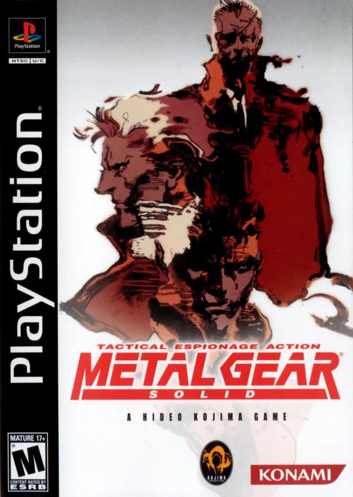
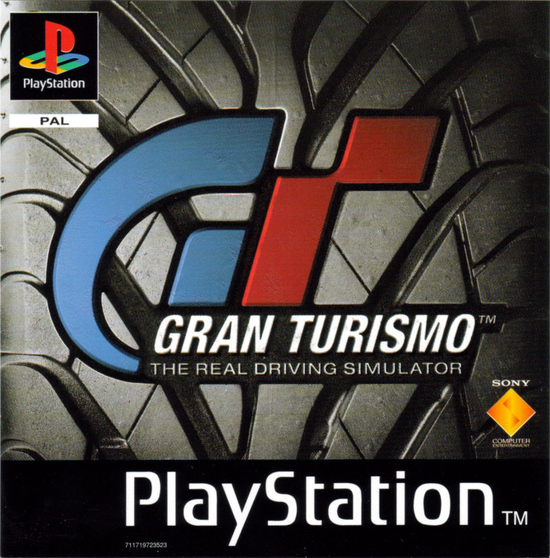
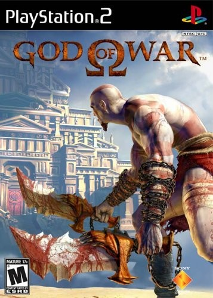
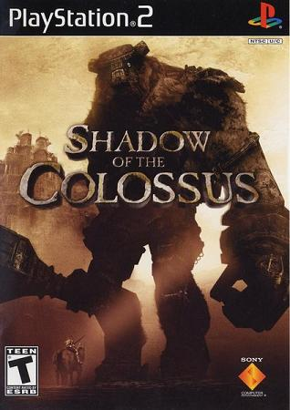

PlayStation
CD-ROM і спеціалізована 3D-графіка задають напрям нової системи.
Синя епоха · Sony
Від дебюту на компакт-дисках до портативних пригод — шлях консолі, яка змінила уявлення про відеоігри.
 EST. 1994
EST. 1994Від першого диска до портативної гри
Кен Кутараґі переконав Sony продовжити розробку власної CD-платформи після того, як спільний проєкт із Nintendo не відбувся. Перша PlayStation вийшла в Японії 3 грудня 1994 року: її 32-бітний процесор і CD-ROM дали змогу будувати насичені 3D-світи.
PlayStation 2 додала DVD-відео та сумісність із багатьма іграми попереднього покоління. У PlayStation 3 Blu-ray поєднався з процесором Cell і мережевими сервісами, а PSP та PS Vita перенесли ігри Sony у портативний формат.
PlayStation Network і PlayStation Store запустилися у 2006 році разом із поколінням PS3. Такий перехід від диска до підключеної платформи змінив і спосіб поширення ігор, і очікування гравців від домашньої консолі.
Від CD до сенсорного екрана
Кожне покоління принесло новий формат, спосіб гри або зв’язку з іншими гравцями.
CD-ROM і спеціалізована 3D-графіка задають напрям нової системи.
DVD-привід і сумісність із попередником розширюють роль консолі вдома.
Компактна ревізія повертає першу PlayStation у новому форм-факторі.
UMD, Wi-Fi та широкий екран відкривають портативний вимір PlayStation.
Blu-ray, Cell і PlayStation Network поєднують ігри з цифровими сервісами.
Перероблена модель зменшує корпус та споживання енергії.
OLED-дисплей, два стіки й задня сенсорна панель додають нові способи керування.
Остання ревізія покоління отримує компактніший корпус і кришку зі зсувом.
Покоління та форми
Від класичного сірого корпусу до компактних Slim-моделей і портативних систем.
Домашня консоль · 1994
Перша система Sony зробила CD-ROM і 3D-графіку центром нового покоління. Велика бібліотека ігор допомогла перетворити її на масову домашню платформу.

Компактна ревізія · 2000
У 2000 році Sony перевипустила першу PlayStation у меншому, заокругленому корпусі. Консоль запускала ту саму бібліотеку ігор на CD і підтримувала окремий LCD-екран.

Домашня консоль · 2000
Друге покоління Sony поєднало ігрову систему з DVD-програвачем. Зворотна сумісність дала змогу продовжити гру у великій бібліотеці першої PlayStation.

Оновлена модель · 2004
Нова версія значно зменшила товщину та вагу системи. Вбудований Ethernet спростив підключення до мережевих режимів ігор.

Домашня консоль · 2006
PS3 принесла формати високої чіткості та Blu-ray у домашню систему. Процесор Cell і графічний чип RSX стали основою складних ігрових світів покоління.

Оновлена модель · 2009
Тонша ревізія зберегла можливості PS3 у компактнішому корпусі. Зменшені розміри та енергоспоживання супроводжували повноцінну підтримку Blu-ray і PSN.

Компактна модель · 2012
Ця ревізія стала найлегшою та найкомпактнішою у сімействі PS3. Розсувна верхня кришка замінила моторизований дисковод попередніх моделей.
Портативна консоль · 2004 у Японії
PlayStation Portable вийшла в Японії у грудні 2004 року та принесла портативним іграм широкий екран. UMD використовувався для ігор і відео, а Wi-Fi відкривав бездротові мережеві можливості.

Портативна консоль · 2011 у Японії
PS Vita з’явилася в Японії у грудні 2011 року з двома аналоговими стіками та сенсорним керуванням. Задня тач-панель і OLED-дисплей розширили способи взаємодії з грою.
У бібліотеці назавжди
Різні жанри й історії, що визначили характер поколінь PlayStation.

1998
Стелс-пригода, що поєднала напружене проникнення з кінематографічною оповіддю.

1997
Реалістичне керування та колекція автомобілів зробили автосимулятор головною серією жанру.

2005
Кратос вирушає у міфологічну пригоду з видовищними боями та головоломками.

2005
Самотня подорож зосереджена на пошуку й подоланні шістнадцяти колосів.
2011
Пригода Нейтана Дрейка веде від руїн до пустелі у стилі пригодницького кіно.